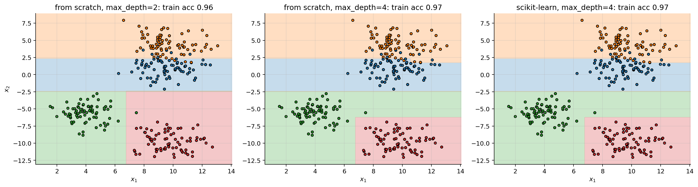
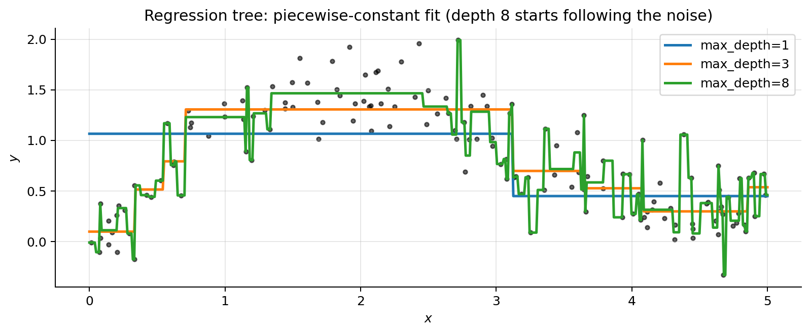
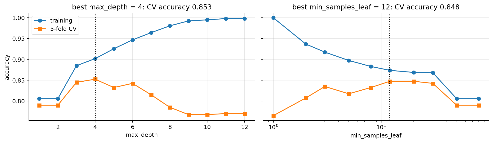
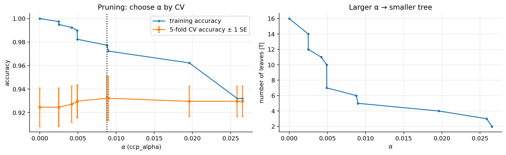
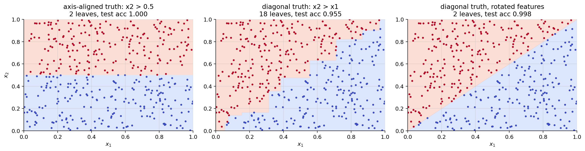
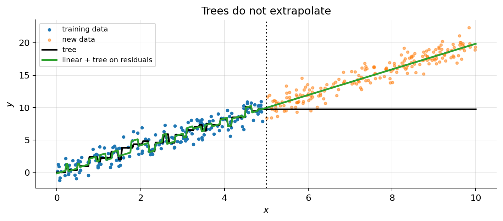

import numpy as np
import matplotlib.pyplot as plt
plt.rcParams.update({"figure.dpi": 90, "axes.grid": True, "grid.alpha": 0.3,
"axes.spines.top": False, "axes.spines.right": False})
rng = np.random.default_rng(0)06 · Decision Trees and CART
A decision tree predicts by asking a sequence of yes/no questions about single features (“is \(x_3 \le 2.5\)?”) until it reaches a leaf that holds a prediction. CART (Classification And Regression Trees, Breiman et al. 1984) is the standard algorithm to grow them, and it is what scikit-learn implements. Trees are the building block of random forests and gradient boosting (note 07), the models that win most competitions on tabular data, so everything in this note is also about them.
What this note covers. The model (a partition of the feature space into boxes), what a leaf predicts and why, the impurity measures (entropy, Gini, and why not the misclassification error), the threshold search, the CART algorithm implemented from scratch, regression trees, overfitting and cost-complexity pruning, and the instability of a single tree. Then the assumptions trees make (and the many they don’t), and the practical situations: categorical features, missing values, imbalanced classes, feature importance and interpretation.
What you need. The supervised-learning vocabulary of note 00: training and test error, overfitting, the bias–variance trade-off (expected squared error = bias² + variance + noise), cross-validation. For the probabilistic leaves, the log-loss of note 02: \(-\sum_i \log \hat p(y^{(i)})\), minus the log-likelihood of the observed labels. Derivatives of one variable and the definition of a concave function are enough for the proofs.
After this note you will be able to grow a tree by hand and in code, explain every number in a split, choose between stopping rules and pruning, recognise the situations where a single tree fails (diagonal boundaries, extrapolation, interactions invisible to a greedy search, high variance) and fix them, and read feature importances without being fooled.
1. An example: a tree is a set of questions
A tree for deciding whether to buy a used car. Each internal node asks one question about one feature; the answer sends the car left (yes) or right (no); a leaf holds the decision. The highlighted path is that of a yellow Ferrari: red? no → yellow? yes → Ferrari? yes → buy.
A small tree is just a set of if / else rules, easy to explain to anyone. CART is the algorithm that learns the questions from data.
2. The model: a tree = boxes in feature space
A (binary) tree splits the input space recursively. The root holds all the training data. Each internal node \(t\) stores a split \((j, s)\): feature index \(j\) and threshold \(s\). Samples with \(x_j\le s\) go left, the rest go right. Each leaf \(\ell\) stores a constant prediction \(c_\ell\). Each question cuts a box in two with a line (a hyperplane, in \(n\) dimensions) parallel to an axis, so the tree divides the space into axis-aligned boxes \(R_1,\dots,R_L\) (the leaves) and predicts
\[ h(\mathbf{x}) = \sum_{\ell=1}^L c_\ell\,\mathbb{1}[\mathbf{x}\in R_\ell], \]
“find the box that contains \(\mathbf{x}\) and return its constant”. Here \(\mathbb{1}[\cdot]\) is 1 if the condition holds and 0 otherwise; exactly one term of the sum is non-zero because the boxes do not overlap and cover the space. The prediction is a piecewise-constant function.
The figure shows the same depth-two tree in both views, on made-up data: 34 cars described by price \(x_1\) and mileage \(x_2\), blue = sold within a month. The fraction written in each box (e.g. \(R_1\): 9/10) is the fraction of sold cars, which is what a classification leaf reports as \(P(\text{sold})\).
Its “parameters” are the tree structure, the splits \((j,s)\) and the leaf values \(c_\ell\). Unlike the previous models there is no smooth loss in continuous parameters, so no gradient descent: the structure is found by a greedy search (section 10), and then each leaf simply takes the best constant (section 3).
Notation for this note. \(S_t\) is the set of training examples reaching node \(t\), \(N_t = |S_t|\), and a split sends them to \(S_L = \{i\in S_t: x^{(i)}_j\le s\}\) and \(S_R = S_t\setminus S_L\), with sizes \(N_L\) and \(N_R\). For classification with \(K\) classes, \(N_{t,k}\) is the number of examples of class \(k\) in node \(t\) and \(p_k = N_{t,k}/N_t\) their fraction. When a node is written as a pair like \((6,2)\), it means (sold, not sold) counts.
3. What a leaf predicts
A leaf predicts one constant \(c\) for all its \(N\) examples. The best \(c\) depends on the loss:
| loss on the leaf’s examples | best constant \(c\) |
|---|---|
| squared error \(\sum_i(y^{(i)}-c)^2\) | the mean \(\bar y\) |
| absolute error \(\sum_i\lvert y^{(i)}-c\rvert\) | the median |
| 0–1 loss (number of mistakes) | the majority class |
| log-loss \(-\sum_i \log \hat p(y^{(i)})\) | the class proportions \(\hat p_k = N_k/N\) |
Proof for the mean. Set the derivative with respect to \(c\) to zero:
\[ \begin{aligned} \frac{d}{dc}\sum_{i=1}^N\big(y^{(i)}-c\big)^2 &= \sum_{i=1}^N 2\big(y^{(i)}-c\big)\cdot(-1) = 0 && \text{chain rule: the derivative of $(y-c)^2$ with respect to $c$ is $2(y-c)\cdot(-1)$}\\ \sum_{i=1}^N y^{(i)} - Nc &= 0 && \text{divide by $-2$, and $\textstyle\sum_{i=1}^N c = Nc$}\\ c &= \frac1N\sum_{i=1}^N y^{(i)} = \bar y && \text{solve for $c$} \end{aligned} \]
The second derivative is \(2N > 0\), so this is a minimum.
Proof for the median. \(|y-c|\) has derivative \(-1\) if \(c<y\) and \(+1\) if \(c>y\). So, for \(c\) not equal to any \(y^{(i)}\),
\[ \frac{d}{dc}\sum_{i=1}^N\big|y^{(i)}-c\big| = \#\{i: y^{(i)} < c\} - \#\{i: y^{(i)} > c\}, \]
(each point below \(c\) contributes \(+1\), each point above contributes \(-1\)). The slope is negative while fewer than half of the points lie below \(c\) and positive once more than half do, so the sum decreases up to the median and increases after it.
Majority class. Predicting class \(k\) is wrong for a fraction \(1-p_k\) of the leaf: the fewest mistakes when \(p_k\) is the largest.
Proof for the class proportions. The leaf predicts a probability vector \((q_1,\dots,q_K)\). Each example of class \(k\) contributes \(-\log q_k\), so the log-loss is \(-\sum_k N_k\log q_k\), to be minimised subject to \(\sum_k q_k = 1\). With a Lagrange multiplier \(\mu\) for the constraint:
\[ \begin{aligned} \mathcal{L}(q,\mu) &= -\sum_{k=1}^K N_k\log q_k + \mu\Big(\sum_{k=1}^K q_k - 1\Big) && \text{loss plus multiplier times constraint}\\ \frac{\partial\mathcal{L}}{\partial q_k} &= -\frac{N_k}{q_k} + \mu = 0 \;\Rightarrow\; q_k = \frac{N_k}{\mu} && \text{derivative of $\log q$ is $1/q$}\\ \sum_{k} q_k &= \frac{\sum_k N_k}{\mu} = \frac{N}{\mu} = 1 \;\Rightarrow\; \mu = N && \text{impose the constraint}\\ q_k &= \frac{N_k}{N} && \text{substitute $\mu$} \end{aligned} \]
The loss is convex in \(q\) (each \(-\log q_k\) is convex), so the stationary point is the minimum. This is the maximum-likelihood estimate of a categorical distribution, and it is what predict_proba returns.
Examples. A regression leaf with \(y=\{3,5,10\}\): mean \(6\), median \(5\). A classification leaf with 6 sold and 2 not sold predicts “sold”, with \(\hat p = 6/8 = 0.75\); check with the derivative: \(\frac{d}{dq}\big[-6\log q - 2\log(1-q)\big] = -\frac6q + \frac{2}{1-q} = 0 \Rightarrow 6(1-q) = 2q \Rightarrow q = 0.75\). The code checks the four answers by brute force on a grid:
yl = np.array([3., 5., 10.])
cs = np.linspace(0, 12, 12001) # candidate constants, step 0.001
print(f"squared error minimised at c = {cs[np.argmin([np.sum((yl - c) ** 2) for c in cs])]:.3f} (mean {yl.mean():.3f})")
print(f"absolute error minimised at c = {cs[np.argmin([np.sum(np.abs(yl - c)) for c in cs])]:.3f} (median {np.median(yl):.3f})")
qs = np.linspace(0.001, 0.999, 999)
print(f"log-loss of (6 sold, 2 not) minimised at q = {qs[np.argmin(-6 * np.log(qs) - 2 * np.log(1 - qs))]:.3f}")squared error minimised at c = 6.000 (mean 6.000)
absolute error minimised at c = 5.000 (median 5.000)
log-loss of (6 sold, 2 not) minimised at q = 0.7504. Which question is better?
The running example of the deck: 16 used cars, 8 sold within a month and 8 not. Two candidate first questions, A (price) and B (mileage):
Both send most sold cars to “yes”. But B produces a pure child: 4 cars, none sold. Nothing more to ask there. To compare questions we need a number, the impurity \(I(t)\) of a node: 0 if all its examples have the same class, largest when the classes are evenly mixed. A question is good if its children are, on average, much purer than the parent:
\[ \Delta I = I(\text{parent}) - \Big(\frac{N_L}{N}\,I(L) + \frac{N_R}{N}\,I(R)\Big), \]
the parent’s impurity minus the size-weighted average impurity of the children. Weighting by size matters: a tiny pure child is not worth much. The next two sections give the two standard choices of \(I\).
5. Entropy and information gain
With \(p_k\) = the fraction of class \(k\) in the node (\(K\) classes), the entropy is
\[ H = -\sum_{k=1}^K p_k\log_2 p_k = \sum_{k=1}^K p_k\cdot\big(-\log_2 p_k\big). \]
- Pure node: one \(p_k = 1\) and \(\log_2 1 = 0\), so \(H = 0\) (by convention \(0\log_2 0 = 0\), the limit of \(p\log_2 p\) as \(p\to 0\)).
- 50/50 with two classes: \(H = \frac12\cdot 1 + \frac12\cdot 1 = 1\) bit, the maximum.
- Meaning: \(-\log_2 p_k\) is the number of bits (yes/no answers) an optimal code spends on a class of probability \(p_k\), so \(H\) is the average number of bits needed to tell the class of an example from the node.
The values of \(-\log_2 p\) we need: \(p = 1/2 \to 1\); \(1/4 \to 2\); \(3/4 \to 0.415\); \(1/3 \to 1.585\); \(2/3 \to 0.585\). The nodes of the example, as (sold, not sold):
\[ \begin{aligned} (8,8):&\quad H = \tfrac12\cdot 1 + \tfrac12\cdot 1 = 1 && \text{the root: } p = \tfrac{8}{16} = \tfrac12 \text{ for each class}\\ (6,2):&\quad H = \tfrac34\cdot 0.415 + \tfrac14\cdot 2 = 0.311 + 0.5 = 0.811 && p_{\text{sold}} = \tfrac68 = \tfrac34,\ p_{\text{not}} = \tfrac28 = \tfrac14;\ \text{the same for } (2,6)\\ (8,4):&\quad H = \tfrac23\cdot 0.585 + \tfrac13\cdot 1.585 = 0.390 + 0.528 = 0.918 && p_{\text{sold}} = \tfrac{8}{12} = \tfrac23,\ p_{\text{not}} = \tfrac{4}{12} = \tfrac13\\ (0,4):&\quad H = 0 && \text{pure} \end{aligned} \]
The information gain is \(\Delta I\) with \(I = H\): the entropy before, minus the size-weighted entropy after,
\[ IG = H(\text{parent}) - \sum_{\text{children } c}\frac{N_c}{N}\,H(c), \]
where \(N_c/N\) is the fraction of the parent’s examples that go to child \(c\). CART always asks yes/no questions: two children. (ID3, an older algorithm, splits a categorical feature into one child per value.)
\[ \begin{aligned} IG_A &= 1 - \Big(\tfrac{8}{16}\cdot 0.811 + \tfrac{8}{16}\cdot 0.811\Big) = 1 - 0.811 = 0.189 && \text{A: children $(6,2)$ and $(2,6)$, 8 cars each}\\ IG_B &= 1 - \Big(\tfrac{12}{16}\cdot 0.918 + \tfrac{4}{16}\cdot 0\Big) = 1 - 0.689 = 0.311 && \text{B: children $(8,4)$ with 12 cars and $(0,4)$ with 4} \end{aligned} \]
\(IG_B = 0.311 > IG_A = 0.189\): ask about the mileage first. B wins even though its big child \((8,4)\) is more mixed than A’s children (0.918 vs 0.811). The pure child is what pays off.
def entropy_c(c): # entropy (bits) of a node given its class counts
p = np.array(c, float) / sum(c); p = p[p > 0]
return -np.sum(p * np.log2(p)) + 0.0 # + 0.0 turns -0.0 into 0.0
def gini_c(c): # Gini impurity of a node given its class counts
p = np.array(c, float) / sum(c)
return 1 - np.sum(p ** 2)
def gain(parent, children, imp): # parent impurity minus size-weighted children impurity
return imp(parent) - sum(sum(ch) / sum(parent) * imp(ch) for ch in children)
for node in [(8, 8), (6, 2), (8, 4), (0, 4)]:
print(f"{str(node):7s} entropy {entropy_c(node):.3f} Gini {gini_c(node):.3f}")
A, B = [(6, 2), (2, 6)], [(8, 4), (0, 4)]
print(f"information gain: A {gain((8, 8), A, entropy_c):.3f}, B {gain((8, 8), B, entropy_c):.3f}")
print(f"Gini decrease : A {gain((8, 8), A, gini_c):.3f}, B {gain((8, 8), B, gini_c):.3f}")(8, 8) entropy 1.000 Gini 0.500
(6, 2) entropy 0.811 Gini 0.375
(8, 4) entropy 0.918 Gini 0.444
(0, 4) entropy 0.000 Gini 0.000
information gain: A 0.189, B 0.311
Gini decrease : A 0.125, B 0.1676. Gini impurity
Draw two examples from the node at random, with replacement. The Gini impurity is the probability that their classes differ:
\[ \begin{aligned} P(\text{same}) &= \sum_{k=1}^K p_k\cdot p_k && \text{both draws are of class $k$ with probability $p_k\cdot p_k$ (independent draws); add over the classes}\\ \text{Gini} &= 1 - \sum_{k=1}^K p_k^2 = \sum_{k=1}^K p_k(1-p_k) && \text{complement; and $\textstyle\sum_k p_k = 1$ gives the second form}\\ \text{two classes: } \ \text{Gini} &= 1 - p^2 - (1-p)^2 = 1 - p^2 - 1 + 2p - p^2 = 2p(1-p) && \text{with $p$ = fraction of class 1; expand $(1-p)^2$} \end{aligned} \]
The second form has another reading: a classifier that predicts at random with the node’s class proportions is wrong on an example of class \(k\) with probability \(1-p_k\), so Gini is its expected error rate.
Our example. Root: \(2\cdot\frac12\cdot\frac12 = 0.5\).
\[ \begin{aligned} A:&\quad 2\cdot\tfrac34\cdot\tfrac14 = 0.375 \ \text{(both children)} \;\Rightarrow\; \Delta = 0.5 - 0.375 = 0.125\\ B:&\quad (8,4)\to 2\cdot\tfrac23\cdot\tfrac13 = 0.444,\qquad (0,4)\to 0 \;\Rightarrow\; \Delta = 0.5 - \Big(\tfrac{12}{16}\cdot 0.444 + \tfrac{4}{16}\cdot 0\Big) = 0.5 - 0.333 = 0.167 \end{aligned} \]
B wins again (the code in section 5 printed the same numbers). Gini is the CART and scikit-learn default: no logarithm, and in practice almost the same trees as entropy (section 7).
All three are 0 for a pure node and largest for a 50/50 node. The table collects them; the plot below draws entropy halved so that the three curves share the maximum 0.5.
| Measure | Formula | Binary case (\(p\) = fraction of class 1) | Max (binary) |
|---|---|---|---|
| Gini | \(I_G = \sum_k p_k(1-p_k) = 1 - \sum_k p_k^2\) | \(2p(1-p)\) | 0.5 |
| Entropy | \(I_H = -\sum_k p_k\log_2 p_k\) | \(-p\log_2p - (1-p)\log_2(1-p)\) | 1 bit |
| Misclassification | \(I_E = 1 - \max_k p_k\) | \(\min(p,1-p)\) | 0.5 |
| Variance (regression) | \(I_V = \frac{1}{N_t}\sum_{i\in S_t}(y^{(i)} - \bar y_t)^2\) | – | – |
p = np.linspace(1e-6, 1 - 1e-6, 400)
gini = 2 * p * (1 - p); ent = -(p * np.log2(p) + (1 - p) * np.log2(1 - p)); mis = 1 - np.maximum(p, 1 - p)
plt.figure(figsize=(6, 3.6))
plt.plot(p, gini, label="Gini $2p(1-p)$"); plt.plot(p, ent / 2, label="entropy / 2 (rescaled)"); plt.plot(p, mis, label="misclassification")
plt.xlabel("$p$ = fraction of class 1 in the node"); plt.ylabel("impurity"); plt.legend(); plt.title("Impurity of a binary node")
plt.tight_layout(); plt.show()
Entropy is also a loss. With leaves predicting their class proportions (section 3), the training log-loss of a node, in natural logarithms, is \(-\sum_k N_k\ln p_k = N\sum_k p_k(-\ln p_k) = N\,H\ln 2\) (because \(\ln p = \log_2 p\cdot\ln 2\)). So \(N\,IG\ln 2\) is exactly the decrease of the training log-loss produced by the split: growing a tree with entropy is greedy maximum likelihood. Likewise, section 11 shows that the variance criterion is greedy least squares.
7. Entropy vs Gini: a second-order relation
Gini is the first-order approximation of entropy. Use natural logarithms, \(H_e = -\sum_k p_k\ln p_k = H\ln 2\). Expand \(-\ln p_k\) around \(p_k = 1\) with \(u = 1 - p_k\):
\[ \begin{aligned} -\ln p_k &= -\ln(1-u) = u + \frac{u^2}{2} + \frac{u^3}{3} + \cdots && \text{Taylor series of $-\ln(1-u)$, valid for $0 \le u < 1$}\\ H_e &= \sum_k p_k(-\ln p_k) = \sum_k p_k(1-p_k) + \sum_k \frac{p_k(1-p_k)^2}{2} + \cdots && \text{multiply by $p_k$ and add over $k$}\\ &= \text{Gini} + \underbrace{\sum_k \frac{p_k(1-p_k)^2}{2} + \cdots}_{\ge 0} && \text{the first term is Gini (section 6)} \end{aligned} \]
So \(H_e \ge \text{Gini}\), with equality only for a pure node, and the two are close when one class dominates. The largest gap is at the uniform node: with two classes, \(\ln 2 - 0.5 = 0.193\).
Near a balanced node, entropy is an increasing affine function of Gini. Two classes, \(p = \frac12 + \delta\). Then
\[ \begin{aligned} \text{Gini} &= 2\big(\tfrac12+\delta\big)\big(\tfrac12-\delta\big) = 2\big(\tfrac14-\delta^2\big) = \tfrac12 - 2\delta^2 && \text{difference of squares}\\ H(p) &= H(\tfrac12) + H'(\tfrac12)\,\delta + \tfrac12 H''(\tfrac12)\,\delta^2 + O(\delta^4) && \text{Taylor expansion of $H(p) = -p\log_2p-(1-p)\log_2(1-p)$ around $\tfrac12$}\\ H'(p) &= \log_2\frac{1-p}{p},\qquad H''(p) = -\frac{1}{p(1-p)\ln 2} && \text{differentiate; so $H'(\tfrac12)=0$, $H''(\tfrac12) = -\tfrac{4}{\ln 2}$}\\ H &\approx 1 - \frac{2}{\ln 2}\,\delta^2 = 1 - \frac{1}{\ln 2}\Big(\frac12 - \text{Gini}\Big) && \text{substitute; then $\delta^2 = (\tfrac12 - \text{Gini})/2$ from the first line} \end{aligned} \]
(the odd powers of \(\delta\) vanish because \(H\) is symmetric around \(\frac12\)). Since \(H \approx a + b\,\text{Gini}\) with \(b = 1/\ln 2 > 0\), and the gain is a weighted average of impurities minus the parent’s, the constant \(a\) cancels and the information gain is approximately \(\Delta\text{Gini}/\ln 2\) when every node involved is close to 50/50: the two criteria rank such splits identically. They differ when a split produces a very pure or very small child, because entropy’s slope is infinite at \(p = 0\) and \(p = 1\) (\(H'(p)\to\pm\infty\)): entropy rewards purity a little more. Question A of the example has children at \(p = \frac14, \frac34\), not far from \(\frac12\): \(0.125/\ln 2 = 0.180\), close to \(IG_A = 0.189\). Question B has a pure child: \(0.167/\ln 2 = 0.240\), far from \(IG_B = 0.311\).
When they disagree. Compare A with a third question C that isolates 3 sold cars: children \((3,0)\) and \((5,8)\). The simulation then measures how often the two criteria choose a different split on random data (random node sizes and class-dependent features, three features per node), and how much entropy gain is lost by following Gini’s choice.
C = [(3, 0), (5, 8)]
print(f"Gini: A {gain((8, 8), A, gini_c):.3f} vs C {gain((8, 8), C, gini_c):.3f} | "
f"entropy: A {gain((8, 8), A, entropy_c):.3f} vs C {gain((8, 8), C, entropy_c):.3f}")
def all_gains(x, y, imp):
"""Gain of every threshold of one feature (binary y), from cumulative class counts."""
o = np.argsort(x); ys = y[o]; n = len(y); k = np.arange(1, n)
c1 = np.cumsum(ys)[:-1]; t1 = ys.sum() # class-1 counts left of each cut, and in total
g = imp(t1 / n) - (k * imp(c1 / k) + (n - k) * imp((t1 - c1) / (n - k))) / n
g[np.diff(x[o]) == 0] = -np.inf # no cut between equal values
return g
h2 = lambda q: -(np.clip(q, 1e-12, 1) * np.log2(np.clip(q, 1e-12, 1)) + np.clip(1 - q, 1e-12, 1) * np.log2(np.clip(1 - q, 1e-12, 1)))
g2 = lambda q: 2 * q * (1 - q)
rs = np.random.default_rng(0); diff_feature = diff_split = 0; loss = []
for _ in range(1000):
n_ = int(rs.integers(20, 300)); y_ = rs.integers(0, 2, n_)
X_ = rs.normal(size=(n_, 3)) + y_[:, None] * rs.normal(0, 1, 3) # three features, random strengths
Gg = np.array([all_gains(X_[:, j], y_, g2) for j in range(3)])
Gh = np.array([all_gains(X_[:, j], y_, h2) for j in range(3)])
bg, bh = np.unravel_index(np.argmax(Gg), Gg.shape), np.unravel_index(np.argmax(Gh), Gh.shape)
diff_feature += bg[0] != bh[0]; diff_split += bg != bh; loss.append(1 - Gh[bg] / Gh[bh])
print(f"different feature: {diff_feature / 1000:.1%} of the nodes; different threshold or feature: {diff_split / 1000:.1%}")
print(f"entropy gain lost by using Gini's split: {np.mean(loss):.2%} on average")Gini: A 0.125 vs C 0.115 | entropy: A 0.189 vs C 0.219
different feature: 2.0% of the nodes; different threshold or feature: 16.6%
entropy gain lost by using Gini's split: 0.71% on averageGini prefers A and entropy prefers C: the small pure child is worth more to entropy. On random nodes the two criteria pick a different feature only about 2 % of the time; they pick a different threshold more often, but mostly a neighbouring one with almost the same gain (following Gini’s choice loses under 1 % of entropy gain on average). This matches the empirical literature (Raileanu and Stoffel, 2004). Choose Gini for speed, entropy if you want the log-loss interpretation; tune criterion only as a last resort.
8. Why not the misclassification error?
The misclassification error of a node, \(1-\max_k p_k\) (the fraction in the minority class for two classes), looks like the natural choice: it is what we finally want to minimise. But on the example it cannot tell A from B:
\[ \begin{aligned} A:&\quad \tfrac12\cdot\tfrac14 + \tfrac12\cdot\tfrac14 = 0.25\\ B:&\quad \tfrac{12}{16}\cdot\tfrac13 + \tfrac{4}{16}\cdot 0 = 0.25 \end{aligned} \]
A tie: both questions leave exactly 4 cars in a minority (2 + 2, or 4 + 0), even though B made a pure child.
Try it. Choose the impurity and the question. The weighted impurity after a split is a point on the chord between the two children, because the parent’s \(p\) is the weighted average of theirs. Misclassification gives \(0.50 \to 0.25\) for both questions; Gini gives gains 0.125 (A) and 0.167 (B); entropy gives 0.189 (A) and 0.311 (B).
The concavity argument. Take two classes, a split with weights \(w_L = N_L/N\), \(w_R = N_R/N\) (both positive) and children fractions \(p_L\), \(p_R\) of class 1. Then:
\[ \begin{aligned} p &= \frac{N_L p_L + N_R p_R}{N} = w_L\,p_L + w_R\,p_R && \text{class-1 count of the parent = sum of the children's; divide by $N$}\\ I(p) &= I(w_L p_L + w_R p_R) \;\ge\; w_L\,I(p_L) + w_R\,I(p_R) && \text{definition of a concave $I$: the curve is above its chords}\\ \Delta I &= I(p) - \big(w_L I(p_L) + w_R I(p_R)\big) \;\ge\; 0 && \text{rearrange: no split increases a concave impurity} \end{aligned} \]
If \(I\) is strictly concave, the inequality in the second line is an equality only when \(p_L = p_R\) (then both equal \(p\)). So with Gini or entropy (both strictly concave: \(I_G'' = -4 < 0\) and \(H'' = -1/(p(1-p)\ln 2) < 0\)) every split that changes the class proportions has a strictly positive gain, and the more extreme the children, the further below the curve the chord lies: pure children are rewarded.
The misclassification error \(\min(p, 1-p)\) is concave but not strictly: it is a straight line on \([0,\frac12]\) and on \([\frac12,1]\). If \(p_L\) and \(p_R\) lie on the same side of \(\frac12\), the chord lies on the curve and the gain is exactly zero, however much the split separates the classes. Example: the child \((8,4)\) of question B, split into \((5,1)\) and \((3,3)\). All three nodes have a majority of sold cars or a tie, so the minority count is \(4 = 1 + 3\) before and after: gain 0. Gini sees the nearly pure child \((5,1)\):
mis_c = lambda c: 1 - max(c) / sum(c)
D = [(5, 1), (3, 3)]
for name, imp in [("misclassification", mis_c), ("Gini", gini_c), ("entropy", entropy_c)]:
print(f"(8,4) -> (5,1) + (3,3): {name:17s} parent {imp((8, 4)):.3f}, gain {gain((8, 4), D, imp):.3f}")(8,4) -> (5,1) + (3,3): misclassification parent 0.333, gain 0.000
(8,4) -> (5,1) + (3,3): Gini parent 0.444, gain 0.056
(8,4) -> (5,1) + (3,3): entropy parent 0.918, gain 0.093A greedy grower using misclassification would stop at \((8,4)\) although a useful split exists. The same holds at any scale: the textbook version of the tie (Hastie et al., Elements of Statistical Learning, §9.2) uses 400 examples of each class and the splits (300, 100) | (100, 300) and (200, 400) | (200, 0), which are the splits A and B multiplied by 50 (with the two classes swapped in the second one, which changes no impurity); all the fractions, and so all the impurities and gains above, are the same. The misclassification error is still fine for measuring the final tree, and it is the \(R(T)\) of the original CART pruning (section 13).
9. Searching the threshold
For a numeric feature the question is \(x_j\le s\). Which thresholds \(s\) do we try? Only midpoints between consecutive sorted distinct values change the partition: any \(s\) strictly between two neighbouring values sends the same examples left, so \(k\) distinct values give only \(k-1\) candidate thresholds. The gain uses the same formula for any impurity \(I\); with entropy, \(\Delta I\) is the information gain.
By hand, 8 points on a line with labels A A A B A B B B; root 4 A / 4 B, Gini 0.5.
- Split \(x\le 3.5\): left (A,A,A) has \(I_G = 0\). Right (B,A,B,B,B) has \(p_A = 1/5\), so \(I_G = 1 - (0.2^2 + 0.8^2) = 0.32\). Weighted: \(\frac38\cdot 0 + \frac58\cdot 0.32 = 0.20\), so \(\Delta I = 0.5 - 0.20 = 0.30\).
- Split \(x\le 4.5\): left (A,A,A,B) has \(I_G = 1-(0.75^2+0.25^2) = 0.375\); right (A,B,B,B) likewise 0.375. Weighted: 0.375, so \(\Delta I = 0.125\).
- Split \(x\le 5.5\): left (A,A,A,B,A) has \(I_G = 0.32\), right (B,B,B) has 0. Weighted: \(\frac58\cdot 0.32 = 0.20\), so \(\Delta I = 0.30\) (tie with 3.5).
- Split \(x\le 1.5\): left (A) is pure, right has 3 A and 4 B, \(I_G = 1 - (9+16)/49 = 24/49 = 0.490\). Weighted: \(\frac78\cdot 0.490 = 0.429\), so \(\Delta I = 0.071\).
Try it. Move the threshold; the bars show the gain of every candidate. With Gini, 3.5 and 5.5 tie at 0.300 and 4.5 gives 0.125; with entropy the numbers change (0.549 at 3.5) but the same two thresholds win.
The code checks every threshold with both impurities:
def gini(y):
if len(y) == 0: return 0.0
_, counts = np.unique(y, return_counts=True); p = counts / len(y)
return 1 - np.sum(p ** 2)
def entropy(y):
_, counts = np.unique(y, return_counts=True); p = counts / len(y)
return -np.sum(p * np.log2(p))
def variance(y):
return np.var(y) if len(y) else 0.0
xw = np.arange(1, 9); yw = np.array(list("AAABABBB"))
for s in np.arange(1.5, 8, 1.0):
L, R = yw[xw <= s], yw[xw > s]
dG = gini(yw) - (len(L) * gini(L) + len(R) * gini(R)) / len(yw)
dH = entropy(yw) - (len(L) * entropy(L) + len(R) * entropy(R)) / len(yw)
print(f"split x <= {s}: Gini decrease = {dG:.3f} information gain = {dH:.3f}")split x <= 1.5: Gini decrease = 0.071 information gain = 0.138
split x <= 2.5: Gini decrease = 0.167 information gain = 0.311
split x <= 3.5: Gini decrease = 0.300 information gain = 0.549
split x <= 4.5: Gini decrease = 0.125 information gain = 0.189
split x <= 5.5: Gini decrease = 0.300 information gain = 0.549
split x <= 6.5: Gini decrease = 0.167 information gain = 0.311
split x <= 7.5: Gini decrease = 0.071 information gain = 0.138One pass per feature. Recomputing the impurity of both children for every threshold costs \(O(N_t)\) per threshold and \(O(N_t^2)\) per feature. Sorting once and moving the examples one by one from right to left while updating the class counts (the cumulative sums in all_gains, section 7) scores all thresholds in \(O(N_t)\) after an \(O(N_t\log N_t)\) sort. The two methods agree:
yb01 = (yw == "B").astype(int)
fast = all_gains(xw.astype(float), yb01, g2) # one pass, cumulative counts
slow = [gini(yw) - (np.sum(xw <= s) * gini(yw[xw <= s]) + np.sum(xw > s) * gini(yw[xw > s])) / 8 for s in np.arange(1.5, 8, 1.0)]
print("one pass:", np.round(fast, 3)); print("brute :", np.round(slow, 3))one pass: [0.071 0.167 0.3 0.125 0.3 0.167 0.071]
brute : [0.071 0.167 0.3 0.125 0.3 0.167 0.071]10. The CART algorithm
Start at the root with the whole training set, then at every node:
- Stop? If the node is pure, too small or at
max_depth, make it a leaf: mean, majority class or class proportions. - Search: for every feature \(j\) and every candidate threshold \(s\), compute the gain \(\Delta I(j,s)\).
- Split: keep the best \((j^*,s^*)\). Examples with \(x_{j^*}\le s^*\) go left, the rest go right.
- Recurse: repeat 1–3 on each child, independently.
Predict: drop \(\mathbf{x}\) down the tree, one question per level, until it reaches a leaf: cost \(O(\text{depth})\).
grow(S, depth):
if stopping rule holds (node pure, N < min_samples_split, depth = max_depth, ...):
return Leaf(value = mean / majority class / class proportions of S)
for each feature j, for each candidate threshold s:
compute ΔI(j, s)
pick (j*, s*) with the largest ΔI (if ΔI < min_impurity_decrease: return Leaf)
return Node(j*, s*, left = grow(S_L, depth+1), right = grow(S_R, depth+1))- Greedy: each split is the best one-step choice. It never looks ahead and never revisits a split, so it does not find the optimal tree (finding the smallest tree consistent with the data is NP-hard, Hyafil and Rivest 1976), but it is fast and works well in practice. Section 15.4 shows a case where greediness fails.
- Recursive: the same procedure runs independently on each child.
- Cost: with \(n\) features, a node with \(N_t\) examples costs \(O(nN_t\log N_t)\); each level of the tree processes each example once, so a balanced tree costs about \(O(n\,m\log m)\) per level.
A worked example with the full computation of every split: this CART walkthrough.
10.1 Implementation from scratch
A compact CART that handles classification (Gini/entropy, majority leaf) and regression (variance, mean leaf).
class Node:
def __init__(self, value, j=None, s=None, left=None, right=None, n=0, gain=0.0):
self.value, self.j, self.s, self.left, self.right, self.n, self.gain = value, j, s, left, right, n, gain
def is_leaf(self): return self.left is None
def best_split(X, y, impurity):
best = (None, None, 0.0) # (j, s, gain)
parent = impurity(y); N = len(y)
for j in range(X.shape[1]):
values = np.unique(X[:, j])
for s in (values[:-1] + values[1:]) / 2: # midpoints between distinct values
mask = X[:, j] <= s
gain = parent - (mask.sum() * impurity(y[mask]) + (~mask).sum() * impurity(y[~mask])) / N
if gain > best[2]:
best = (j, s, gain)
return best
def grow(X, y, impurity, leaf_value, depth=0, max_depth=5, min_samples_split=2):
node = Node(leaf_value(y), n=len(y))
if depth >= max_depth or len(y) < min_samples_split or impurity(y) == 0:
return node
j, s, gain = best_split(X, y, impurity)
if j is None:
return node
mask = X[:, j] <= s
node.j, node.s, node.gain = j, s, gain
node.left = grow(X[mask], y[mask], impurity, leaf_value, depth + 1, max_depth, min_samples_split)
node.right = grow(X[~mask], y[~mask], impurity, leaf_value, depth + 1, max_depth, min_samples_split)
return node
def predict_one(node, x):
while not node.is_leaf():
node = node.left if x[node.j] <= node.s else node.right
return node.value
majority = lambda y: np.bincount(y).argmax()
predict = lambda tree, X: np.array([predict_one(tree, x) for x in X])from sklearn.datasets import make_blobs
from sklearn.tree import DecisionTreeClassifier
Xb, yb = make_blobs(n_samples=300, centers=4, cluster_std=1.3, random_state=4)
g1, g2_ = np.meshgrid(np.linspace(Xb[:, 0].min() - 1, Xb[:, 0].max() + 1, 250), np.linspace(Xb[:, 1].min() - 1, Xb[:, 1].max() + 1, 250))
G = np.c_[g1.ravel(), g2_.ravel()]
fig, axes = plt.subplots(1, 3, figsize=(16, 4.4))
for ax, depth in zip(axes[:2], [2, 4]):
tree = grow(Xb, yb, gini, majority, max_depth=depth)
Z = predict(tree, G).reshape(g1.shape)
ax.contourf(g1, g2_, Z, alpha=0.25, levels=[-0.5, 0.5, 1.5, 2.5, 3.5], cmap="tab10", vmin=0, vmax=9)
ax.scatter(Xb[:, 0], Xb[:, 1], c=yb, cmap="tab10", vmin=0, vmax=9, edgecolor="k", s=15)
ax.set_title(f"from scratch, max_depth={depth}: train acc {np.mean(predict(tree, Xb) == yb):.2f}")
sk = DecisionTreeClassifier(max_depth=4, random_state=0).fit(Xb, yb)
Z = sk.predict(G).reshape(g1.shape)
axes[2].contourf(g1, g2_, Z, alpha=0.25, levels=[-0.5, 0.5, 1.5, 2.5, 3.5], cmap="tab10", vmin=0, vmax=9)
axes[2].scatter(Xb[:, 0], Xb[:, 1], c=yb, cmap="tab10", vmin=0, vmax=9, edgecolor="k", s=15)
axes[2].set_title(f"scikit-learn, max_depth=4: train acc {sk.score(Xb, yb):.2f}")
for ax in axes: ax.set_xlabel("$x_1$")
axes[0].set_ylabel("$x_2$")
plt.tight_layout(); plt.show()
def print_tree(node, names, indent=""):
if node.is_leaf():
print(f"{indent}predict {node.value} (n={node.n})"); return
print(f"{indent}if {names[node.j]} <= {node.s:.2f}: (n={node.n}, Gini decrease={node.gain:.3f})")
print_tree(node.left, names, indent + " ")
print(f"{indent}else:")
print_tree(node.right, names, indent + " ")
print_tree(grow(Xb, yb, gini, majority, max_depth=2), ["x1", "x2"])if x2 <= -2.45: (n=300, Gini decrease=0.250)
if x1 <= 6.78: (n=150, Gini decrease=0.487)
predict 2 (n=74)
else:
predict 3 (n=76)
else:
if x2 <= 2.30: (n=150, Gini decrease=0.376)
predict 0 (n=73)
else:
predict 1 (n=77)The boundaries are made of axis-aligned segments: each split is a line perpendicular to one axis. A diagonal boundary has to be approximated by a staircase (section 15.2).
11. Regression trees
Same algorithm. The leaf predicts the mean, and the impurity is the variance of \(y\) in the node:
\[ I_V(S) = \frac1N\sum_{i\in S}\big(y^{(i)}-\bar y_S\big)^2 \quad\Rightarrow\quad N\,I_V(S) = \mathrm{SSE}(S), \]
where \(\mathrm{SSE}(S)\) is the squared error of predicting the mean on \(S\), the optimal leaf value (section 3). Multiply the gain by \(N\):
\[ N\,\Delta I_V = \mathrm{SSE}(\text{parent}) - \big[\mathrm{SSE}(L) + \mathrm{SSE}(R)\big], \]
so maximising the variance decrease is exactly choosing the split that most reduces the training squared error of the tree.
A closed form for the reduction. Write \(\bar y\), \(\bar y_L\), \(\bar y_R\) for the means of parent and children.
\[ \begin{aligned} \sum_{i\in L}(y^{(i)}-\bar y)^2 &= \sum_{i\in L}\big((y^{(i)}-\bar y_L) + (\bar y_L - \bar y)\big)^2 && \text{add and subtract $\bar y_L$}\\ &= \mathrm{SSE}(L) + 2(\bar y_L-\bar y)\sum_{i\in L}(y^{(i)}-\bar y_L) + N_L(\bar y_L-\bar y)^2 = \mathrm{SSE}(L) + N_L(\bar y_L-\bar y)^2 && \text{expand; deviations from $\bar y_L$ sum to 0}\\ \mathrm{SSE}(\text{parent}) &= \mathrm{SSE}(L) + \mathrm{SSE}(R) + N_L(\bar y_L-\bar y)^2 + N_R(\bar y_R-\bar y)^2 && \text{same for $R$, and add}\\ \bar y_L - \bar y &= \frac{N_R}{N}(\bar y_L - \bar y_R), \quad \bar y_R - \bar y = \frac{N_L}{N}(\bar y_R - \bar y_L) && \text{because } \bar y = (N_L\bar y_L + N_R\bar y_R)/N\\ N\,\Delta I_V &= \frac{N_L N_R^2 + N_R N_L^2}{N^2}(\bar y_L-\bar y_R)^2 = \frac{N_L N_R}{N}(\bar y_L-\bar y_R)^2 && \text{substitute, and } N_L + N_R = N \end{aligned} \]
The best split separates the means as much as possible, weighted by \(N_LN_R/N\), which favours balanced splits.
By hand: \(y=\{1,2,6,7\}\), mean 4: SSE \(=9+4+4+9=26\). Split into \(\{1,2\}\) and \(\{6,7\}\): means 1.5 and 6.5, SSE \(=0.5+0.5=1\). The split removes \(25\) of the \(26\); the closed form gives the same, \(\frac{2\cdot 2}{4}(6.5-1.5)^2 = 25\).
yr4 = np.array([1., 2., 6., 7.]); L4, R4 = yr4[:2], yr4[2:]
sse = lambda v: np.sum((v - v.mean()) ** 2)
print(f"SSE parent {sse(yr4):.1f}, children {sse(L4) + sse(R4):.1f}, reduction {sse(yr4) - sse(L4) - sse(R4):.1f}, "
f"closed form {len(L4) * len(R4) / 4 * (L4.mean() - R4.mean()) ** 2:.1f}")SSE parent 26.0, children 1.0, reduction 25.0, closed form 25.0The prediction is a step function. Each extra level can double the number of steps. Try it. 50 noisy points from the dashed curve and a regression tree read at increasing depth: depth 3 has 8 leaves and the lowest test MSE of all depths (0.118); depth 10 has one leaf per training point (50 leaves), a training MSE of 0 and a test MSE of 0.202, worse than depth 1 (0.194).
The same with the from-scratch implementation:
xr = np.sort(rng.uniform(0, 5, 150)); yr = np.sin(xr) + 0.3 * xr + rng.normal(0, 0.25, 150)
gr = np.linspace(0, 5, 500)
plt.figure(figsize=(9, 3.8)); plt.scatter(xr, yr, s=10, color="k", alpha=0.6)
for depth in [1, 3, 8]:
t = grow(xr[:, None], yr, variance, np.mean, max_depth=depth)
plt.plot(gr, predict(t, gr[:, None]), lw=2, label=f"max_depth={depth}")
plt.xlabel("$x$"); plt.ylabel("$y$"); plt.legend(); plt.title("Regression tree: piecewise-constant fit (depth 8 starts following the noise)")
plt.tight_layout(); plt.show()
With squared error, a single extreme \(y\) pulls the mean of its leaf; criterion="absolute_error" (median leaves, section 3) is the robust alternative, and criterion="poisson" fits counts such as claim numbers.
12. Depth and overfitting
Try it. CART (Gini) on 160 points; the true boundary is the dashed wave, and 12 % of the labels are flipped. Test accuracy on 1000 new points. Depth 1 underfits (test accuracy 0.738); depth 3 (7 leaves) has the best test accuracy of all depths, 0.833; from depth 6 small boxes appear around single noisy points, and at depth 10 every leaf is pure: training accuracy 1, test accuracy 0.720.
- Zero training error is always reachable. Each split turns one leaf into two, so a tree with \(s\) splits has \(s+1\) leaves. If all training inputs are distinct, any leaf with two or more examples can be split (two distinct points differ in at least one feature, and a threshold between them separates them), so growing until no leaf can be split puts each of the \(m\) points in its own leaf: at most \(m-1\) splits isolate every training point. A fully grown tree therefore has low bias and very high variance (note 00: the error on new data is bias² + variance + noise, and here the variance term dominates).
- Boundaries are staircases of axis-aligned segments.
- Depth 2 predicts the same as depth 1 in the widget: its splits change no majority, but they make depth 3 possible. A greedy tree can need splits that look useless on their own, which is why stopping as soon as the gain is small is risky (section 13).
The hyperparameters that limit a tree (scikit-learn names):
max_depth: at most this many questions on any path (typically 3 to 10).min_samples_leaf: every leaf keeps at least this many examples;min_samples_split: a node needs at least this many examples to be split.min_impurity_decrease: skip splits whose size-weighted gain \(\frac{N_t}{m}\Delta I\) is smaller.max_leaf_nodes: grow best-first up to this many leaves.
max_depth limits the tree uniformly: every branch stops at the same depth, dense and sparse regions alike. min_samples_leaf limits it locally: it stops where data become scarce, so a region with many examples can still be split finely; it also smooths the probability estimates (a leaf of 1 example says 0 % or 100 %). The validation curves below (training and 5-fold CV accuracy against each hyperparameter) use 400 points of the same wave problem, generated in Python with the formula of the widget: class 1 above \(x_2 = 0.5 + 0.22\sin(2\pi x_1)\), 12 % of the labels flipped.
from sklearn.model_selection import validation_curve, StratifiedKFold
def wave(n, r, flip=0.12):
X = r.uniform(0, 1, (n, 2)); y = (X[:, 1] > 0.5 + 0.22 * np.sin(2 * np.pi * X[:, 0])).astype(int)
f = r.uniform(size=n) < flip; y[f] = 1 - y[f]
return X, y
Xw, yw2 = wave(400, np.random.default_rng(1))
cvw = StratifiedKFold(5, shuffle=True, random_state=0)
fig, axes = plt.subplots(1, 2, figsize=(12, 3.6), sharey=True)
for ax, (param, grid_) in zip(axes, [("max_depth", np.arange(1, 13)), ("min_samples_leaf", np.array([1, 2, 3, 5, 8, 12, 20, 30, 50, 80]))]):
tr_s, va_s = validation_curve(DecisionTreeClassifier(random_state=0), Xw, yw2, param_name=param, param_range=grid_, cv=cvw)
ax.plot(grid_, tr_s.mean(1), "o-", label="training"); ax.plot(grid_, va_s.mean(1), "s-", label="5-fold CV")
b = int(np.argmax(va_s.mean(1))); ax.axvline(grid_[b], color="k", ls=":")
ax.set_xlabel(param); ax.set_title(f"best {param} = {grid_[b]}: CV accuracy {va_s.mean(1)[b]:.3f}")
if param == "min_samples_leaf": ax.set_xscale("log")
print(f"{param}: best {grid_[b]} (CV {va_s.mean(1)[b]:.3f}); at the extreme {grid_[0]}: train {tr_s.mean(1)[0]:.3f}, CV {va_s.mean(1)[0]:.3f}")
axes[0].set_ylabel("accuracy"); axes[0].legend(); plt.tight_layout(); plt.show()max_depth: best 4 (CV 0.853); at the extreme 1: train 0.806, CV 0.790
min_samples_leaf: best 12 (CV 0.848); at the extreme 1: train 1.000, CV 0.765
The two curves are mirror images: complexity grows to the right with max_depth and to the left with min_samples_leaf. With min_samples_leaf = 1 or a large depth the training accuracy approaches 1 while CV accuracy falls (variance); very large leaves or a very shallow tree underfit (bias). Both should be chosen by CV, like any hyperparameter.
13. Cost-complexity pruning
Stopping rules are simple but short-sighted: a split that looks useless may enable very good splits below it (the depth-2 splits of the widget; XOR in section 15.4 is the extreme case). The alternative is to grow, then prune (post-pruning): grow a large tree \(T_0\), then collapse the branches that do not pay for themselves.
Cost-complexity pruning (CART’s own method). For a penalty \(\alpha\ge0\), keep the subtree \(T\subseteq T_0\) that minimises
\[ \boxed{R_\alpha(T) = R(T) + \alpha\,|T|} \]
where \(R(T)\) is the training error and \(|T|\) the number of leaves. In the original CART \(R(T)\) is the misclassification rate; scikit-learn uses the total size-weighted impurity of the leaves, \(R(T) = \sum_{\text{leaves } \ell}\frac{N_\ell}{m}I(\ell)\). Fit + \(\alpha\) × complexity: regularisation again, as in note 03.
Is a branch worth it? Let \(T_t\) be the branch below an internal node \(t\) (the node and all its descendants), with \(|T_t|\) leaves and training error \(R(T_t)\); collapsing it turns \(t\) into a leaf with error \(R(t)\).
\[ \begin{aligned} \text{keep: }&\; R(T_t) + \alpha\,|T_t|, \qquad \text{collapse: }\; R(t) + \alpha\cdot 1 && \text{only the branch's own terms change}\\ \text{collapse} \iff&\; R(t) + \alpha \le R(T_t) + \alpha|T_t| && \text{the smaller cost wins}\\ \iff&\; R(t) - R(T_t) \le \alpha\,(|T_t| - 1) && \text{move the $\alpha$ terms to the right}\\ \iff&\; \alpha \;\ge\; g(t) = \frac{R(t) - R(T_t)}{|T_t| - 1} && \text{divide by $|T_t| - 1 > 0$} \end{aligned} \]
\(g(t)\) is the error reduction the branch buys per extra leaf. Example: a branch with 3 leaves lowers the error from 0.20 to 0.14; it is collapsed as soon as \(\alpha\ge\frac{0.20-0.14}{3-1} = 0.03\).
Weakest-link pruning. Start from \(T_0\) at \(\alpha = 0\). Compute \(g(t)\) for every internal node; the node with the smallest \(g(t)\) is the weakest link; collapse it, which gives the optimal subtree for \(\alpha\) just above that value. Recompute and repeat until only the root is left. This yields a finite, nested sequence of subtrees \(T_0 \supset T_1 \supset \cdots \supset \{\text{root}\}\) and the values \(\alpha_1 < \alpha_2 < \cdots\) at which each becomes optimal (Breiman et al. proved that the optimal subtree for any \(\alpha\) is in this sequence). cost_complexity_pruning_path returns them. The code recomputes the first weakest link by hand on a fully grown tree and compares it with scikit-learn:
from sklearn.datasets import load_breast_cancer
from sklearn.model_selection import train_test_split, cross_val_score
Xc, yc = load_breast_cancer(return_X_y=True)
Xtr, Xte, ytr, yte = train_test_split(Xc, yc, test_size=0.3, stratify=yc, random_state=0)
t0 = DecisionTreeClassifier(random_state=0).fit(Xtr, ytr).tree_
R_node = lambda t: t0.n_node_samples[t] / t0.n_node_samples[0] * t0.impurity[t] # R(t), size-weighted Gini
def leaves_below(t):
if t0.children_left[t] == -1: return [t]
return leaves_below(t0.children_left[t]) + leaves_below(t0.children_right[t])
g_t = {t: (R_node(t) - sum(R_node(l) for l in leaves_below(t))) / (len(leaves_below(t)) - 1)
for t in range(t0.node_count) if t0.children_left[t] != -1}
weakest = min(g_t, key=g_t.get)
path = DecisionTreeClassifier(random_state=0).cost_complexity_pruning_path(Xtr, ytr)
print(f"{len(g_t)} internal nodes; weakest link: node {weakest}, g(t) = {g_t[weakest]:.6f}, a branch of {len(leaves_below(weakest))} leaves")
print(f"scikit-learn's first non-zero alpha on the path: {path.ccp_alphas[1]:.6f}")15 internal nodes; weakest link: node 26, g(t) = 0.002492, a branch of 3 leaves
scikit-learn's first non-zero alpha on the path: 0.002492Choosing \(\alpha\) by cross-validation on the path. Each \(\alpha\) of the path defines a subtree; score each by CV on the training data and keep the best. A common, more conservative variant is the one-standard-error rule: take the largest \(\alpha\) (smallest tree) whose CV score is within one standard error of the best, because CV scores are noisy (note 00, section 10) and a smaller tree is easier to read and more stable.
alphas = path.ccp_alphas[:-1]
tr_acc, cv_acc, cv_se, leaves = [], [], [], []
for a in alphas:
t = DecisionTreeClassifier(ccp_alpha=a, random_state=0)
s = cross_val_score(t, Xtr, ytr, cv=5)
cv_acc.append(s.mean()); cv_se.append(s.std(ddof=1) / np.sqrt(5))
t.fit(Xtr, ytr); tr_acc.append(t.score(Xtr, ytr)); leaves.append(t.get_n_leaves())
cv_acc, cv_se = np.array(cv_acc), np.array(cv_se)
ib = int(np.argmax(cv_acc)); best_a = alphas[ib]
one_se = max(i for i in range(len(alphas)) if cv_acc[i] >= cv_acc[ib] - cv_se[ib])
fig, axes = plt.subplots(1, 2, figsize=(12, 3.8))
axes[0].plot(alphas, tr_acc, "o-", ms=3, label="training accuracy")
axes[0].errorbar(alphas, cv_acc, yerr=cv_se, fmt="s-", ms=3, capsize=2, label="5-fold CV accuracy ± 1 SE")
axes[0].axvline(best_a, color="k", ls=":"); axes[0].set_xlabel(r"$\alpha$ (ccp_alpha)"); axes[0].set_ylabel("accuracy")
axes[0].legend(); axes[0].set_title("Pruning: choose α by CV")
axes[1].plot(alphas, leaves, "o-", ms=3); axes[1].set_xlabel(r"$\alpha$"); axes[1].set_ylabel("number of leaves |T|"); axes[1].set_title("Larger α → smaller tree")
plt.tight_layout(); plt.show()
full = DecisionTreeClassifier(random_state=0).fit(Xtr, ytr)
for name, a in [("full tree ", 0.0), ("best CV ", best_a), ("one-SE rule", alphas[one_se])]:
t = DecisionTreeClassifier(ccp_alpha=a, random_state=0).fit(Xtr, ytr)
print(f"{name} α = {a:.4f}: {t.get_n_leaves():3d} leaves, train acc {t.score(Xtr, ytr):.3f}, test acc {t.score(Xte, yte):.3f}")
full tree α = 0.0000: 16 leaves, train acc 1.000, test acc 0.906
best CV α = 0.0088: 6 leaves, train acc 0.977, test acc 0.918
one-SE rule α = 0.0265: 2 leaves, train acc 0.932, test acc 0.889The full tree fits the training set perfectly; pruning to the best CV \(\alpha\) keeps 6 of its 16 leaves and does not lose test accuracy (0.918 against 0.906). The one-standard-error rule goes down to 2 leaves and loses about 3 points (0.889): on this problem it is too conservative. The test set has only 171 examples, so differences of one or two points are within its standard error (\(\sqrt{0.9\cdot 0.1/171} \approx 0.023\), note 00): the clear gain of pruning here is a much smaller, more readable tree.
14. Instability: high variance
Try it. Split the same 160 points at random into two halves, and grow a full tree on each half. Same algorithm, same kind of data. Thick line: the root question; dashed: the true boundary. Each click draws new halves; the read-out says on which fraction of the plane the two trees disagree: about a quarter of it (25 % in the first draw, then 29 % and 25 % in the two guided steps).
Small changes in the data → big changes in the model: that is high variance. It comes from the hierarchy: when two candidate root splits have nearly equal gains, a few examples decide which one wins, and everything below the root is grown on a different partition. The same effect, measured: 100 bootstrap resamples (samples of size \(m\) drawn with replacement, which imitate “another dataset from the same distribution”) of 300 wave points; for each, a fully grown tree and a tree with min_samples_leaf=10. We record the root threshold, the probability that two trees disagree at a point of the plane, and the accuracy on 5,000 noiseless test points of one tree and of the majority vote of the 100 trees.
rb = np.random.default_rng(0)
Xw3, yw3 = wave(300, rb); Xw_te, yw_te = wave(5000, rb, flip=0.0)
pred_full, pred_leaf, root_thr = [], [], []
for b in range(100):
idx = rb.integers(0, len(yw3), len(yw3)) # bootstrap resample
tf = DecisionTreeClassifier(random_state=0).fit(Xw3[idx], yw3[idx])
root_thr.append(tf.tree_.threshold[0]); pred_full.append(tf.predict(Xw_te))
pred_leaf.append(DecisionTreeClassifier(min_samples_leaf=10, random_state=0).fit(Xw3[idx], yw3[idx]).predict(Xw_te))
pred_full, pred_leaf = np.array(pred_full), np.array(pred_leaf)
disagree = lambda P: np.mean(2 * P.mean(0) * (1 - P.mean(0))) # P(two random trees differ at a point), averaged over points
print(f"root threshold: 5th–95th percentile {np.percentile(root_thr, 5):.2f}–{np.percentile(root_thr, 95):.2f}")
for name, P in [("fully grown ", pred_full), ("min_samples_leaf=10", pred_leaf)]:
print(f"{name}: two trees disagree on {disagree(P):.1%} of the plane; one tree acc {np.mean(P == yw_te):.3f}; "
f"vote of 100 trees acc {np.mean((P.mean(0) > 0.5) == yw_te):.3f}")root threshold: 5th–95th percentile 0.43–0.60
fully grown : two trees disagree on 19.1% of the plane; one tree acc 0.851; vote of 100 trees acc 0.928
min_samples_leaf=10: two trees disagree on 12.5% of the plane; one tree acc 0.902; vote of 100 trees acc 0.959(If a fraction \(q\) of the trees predicts class 1 at a point, two trees drawn at random disagree there with probability \(2q(1-q)\): the Gini formula again.) The root threshold wanders over a wide interval; two fully grown trees disagree on almost a fifth of the plane; regularising the leaves reduces the disagreement and improves a single tree; and averaging the 100 trees beats any single one by a wide margin, fully grown or not.
That last line is the idea of bagging and random forests (note 07): the variance of an average of \(B\) predictions, each with variance \(\sigma^2\) and pairwise correlation \(\rho\), is \(\rho\sigma^2 + \frac{1-\rho}{B}\sigma^2\), so averaging many decorrelated trees removes most of the variance while keeping their low bias. The remedies for instability, in order: prune or regularise (min_samples_leaf, ccp_alpha), and if accuracy matters more than a single readable tree, use an ensemble.
15. Assumptions: what they mean, how to check them, what to do
Trees make very few assumptions, which is why they are so popular. The assumptions of the evaluation (independent examples from the same distribution as deployment data, no leakage) are those of note 00, section 13; the ones below are specific to trees. Each concerns prediction; for interpretation (reading rules and importances), instability (15.5) and correlated features (16.4) matter most.
| Assumption | What goes wrong if it fails | How to check | What to do |
|---|---|---|---|
| T1. Independent examples, same distribution (note 00) | optimistic CV (trees memorise duplicates and groups especially well) | note 00: grouped / time CV vs random CV, adversarial validation | group or time splits, de-duplicate |
| T2. The signal is well approximated by axis-aligned boxes | diagonal or smooth boundaries need many leaves: staircase, more variance | compare with a linear model; leaves needed vs accuracy; try rotated features | engineer features (differences, ratios), rotate (PCA), ensembles |
| T3. Deployment inputs lie inside the training range | no extrapolation: flat predictions beyond the data | fraction of new inputs outside the training range; adversarial validation | model the trend separately (detrend, linear model + tree on residuals) |
| T4. Useful splits are visible one step at a time (greedy search) | pure interactions (XOR) are missed; early stopping stops too soon | a deeper tree or an ensemble does much better; look for interactions | grow deep and prune; add interaction features; boosting |
| T5. Enough data per leaf (a stable structure) | high variance: the tree and its rules change with the sample | bootstrap the tree: root split and predictions across resamples (section 14) | min_samples_leaf, pruning, ensembles |
15.1 What trees do not assume
- No scaling, and invariance to monotone transformations. Standardising, taking logs, or any strictly increasing transformation of a feature gives the same tree (proved and checked below). No need for the scaling of note 03.
- No functional form: no linearity, no additivity; interactions are captured automatically (when greedy search can see them, T4). Trees are non-parametric: the number of leaves grows with the data.
- No distribution of the noise (no normality, no constant variance): the impurity is just a loss.
- Outliers in \(\mathbf{x}\) are harmless (only the order of values matters); outliers in \(y\) affect the squared-error criterion (use
absolute_error). - Collinearity does not hurt prediction: of two nearly identical features the tree simply uses one. It does hurt the interpretation of importances (section 16.4).
Claim (monotone invariance). Let \(g\) be strictly increasing and replace feature \(j\) by \(g(x_j)\) in all training examples. The tree grown by CART has the same structure, the same training examples in every leaf, and the same leaf values.
Proof.
\[ \begin{aligned} &x^{(a)}_j \le x^{(b)}_j \iff g(x^{(a)}_j) \le g(x^{(b)}_j) && \text{$g$ strictly increasing preserves order}\\ &\{i\in S_t:\ x^{(i)}_j \le s\} = \{i\in S_t:\ g(x^{(i)}_j) \le s'\} && \text{for $s$ between two consecutive sorted values and $s'$ between their images}\\ &\text{the candidate partitions of every node are the same sets} && \text{the thresholds are the gaps between consecutive values, in the same order}\\ &\Delta I \text{ of each candidate partition is the same} && \text{$\Delta I$ depends only on which labels go left and right}\\ &\text{the best split at the root, then (by induction on depth) at every node, is the same} && \text{same data reach each child} \qquad\blacksquare \end{aligned} \]
(with ties broken in the same order). What does change is the stored threshold: scikit-learn stores the midpoint \(\frac12(x_{(a)}+x_{(b)})\) of the two neighbouring training values, and in the transformed feature it stores \(\frac12\big(g(x_{(a)})+g(x_{(b)})\big)\), which is in general not \(g\) of the old midpoint. So a new point that falls strictly between two neighbouring training values may go to different sides in the two trees. Everything else, including every prediction on the training data, is identical. A strictly decreasing \(g\) reverses the order, which only swaps left and right.
rm = np.random.default_rng(0)
Xm = rm.uniform(0.5, 5, (300, 2)); ym = ((Xm[:, 0] * Xm[:, 1] > 6) ^ (rm.uniform(size=300) < 0.1)).astype(int)
Xm_new = rm.uniform(0.5, 5, (5000, 2))
gm = lambda X: np.c_[np.log(X[:, 0]), X[:, 1] ** 3] # two strictly increasing transformations
ta = DecisionTreeClassifier(max_depth=4, random_state=0).fit(Xm, ym)
tb = DecisionTreeClassifier(max_depth=4, random_state=0).fit(gm(Xm), ym)
print(f"same leaf for every training example: {np.all(ta.apply(Xm) == tb.apply(gm(Xm)))}")
print(f"root threshold: {ta.tree_.threshold[0]:.9f} vs back-transformed {np.exp(tb.tree_.threshold[0]):.9f}")
print(f"new points predicted differently: {np.mean(ta.predict(Xm_new) != tb.predict(gm(Xm_new))):.2%}")same leaf for every training example: True
root threshold: 2.261748672 vs back-transformed 2.261748683
new points predicted differently: 0.02%15.2 T2 · The signal is well approximated by axis-aligned boxes
What it says. The regression function (or the class boundary) can be approximated by a moderate number of boxes with sides parallel to the axes, i.e. the important structure is aligned with the features as given.
Why it matters. A boundary like \(x_2 = x_1\) (a claim is suspicious when the repair estimate exceeds the car’s value) is one line for a linear model but a staircase for a tree. Every step costs leaves, every leaf costs data, so the tree needs many more examples to reach the same accuracy, and its extra leaves add variance. It is a prediction problem (worse accuracy for a given \(m\)), and an interpretation one (the rules describe the staircase, not the simple truth).
How to check. Compare the tree with a linear model (logistic or linear regression, notes 01–02) on the same CV folds; plot accuracy against the number of leaves; try the tree on combinations of features suggested by the domain (differences, ratios) or on principal-component rotations, and see whether a much smaller tree does as well. Holds vs violated, side by side: a boundary along an axis (\(x_2 > 0.5\)) versus the diagonal (\(x_2 > x_1\)), with 400 training points.
rd = np.random.default_rng(1)
Xd, Xd_te = rd.uniform(0, 1, (400, 2)), rd.uniform(0, 1, (5000, 2))
rotate = lambda X: np.c_[X[:, 1] - X[:, 0], X[:, 0] + X[:, 1]] # new features: x2 - x1 and x1 + x2
fig, axes = plt.subplots(1, 3, figsize=(15, 4))
cases = [("axis-aligned truth: x2 > 0.5", lambda X: X[:, 1] > 0.5, lambda X: X),
("diagonal truth: x2 > x1", lambda X: X[:, 1] > X[:, 0], lambda X: X),
("diagonal truth, rotated features", lambda X: X[:, 1] > X[:, 0], rotate)]
gg = np.linspace(0, 1, 200); GG = np.array(np.meshgrid(gg, gg)).reshape(2, -1).T
for ax, (title, truth, feats) in zip(axes, cases):
t = DecisionTreeClassifier(random_state=0).fit(feats(Xd), truth(Xd))
ax.contourf(gg, gg, t.predict(feats(GG)).reshape(200, 200), alpha=0.3, cmap="coolwarm")
ax.scatter(Xd[:, 0], Xd[:, 1], c=truth(Xd), s=6, cmap="coolwarm")
ax.set_title(f"{title}\n{t.get_n_leaves()} leaves, test acc {t.score(feats(Xd_te), truth(Xd_te)):.3f}"); ax.set_xlabel("$x_1$")
print(f"{title:34s}: {t.get_n_leaves():2d} leaves, test accuracy {t.score(feats(Xd_te), truth(Xd_te)):.3f}")
axes[0].set_ylabel("$x_2$"); plt.tight_layout(); plt.show()axis-aligned truth: x2 > 0.5 : 2 leaves, test accuracy 1.000
diagonal truth: x2 > x1 : 18 leaves, test accuracy 0.955
diagonal truth, rotated features : 2 leaves, test accuracy 0.998
What to do, in order of preference: (1) feature engineering from domain knowledge: if the ratio or difference of two features matters, add it (here \(x_2 - x_1\) turns the diagonal into a single split); (2) a rotation of the inputs (principal components, or random rotations inside an ensemble) when no domain feature is known; (3) an ensemble of trees (note 07), whose averaged staircases approximate smooth boundaries much better; (4) a different model family if the structure is essentially linear.
15.3 T3 · Deployment inputs lie inside the training range
What it says. New inputs fall in the region covered by the training data. A tree’s prediction is the constant of a leaf, and the leaves at the edges extend to infinity, so outside the training range the prediction is the constant of the last leaf.
Why it matters. Trees cannot extrapolate a trend. With inflation, a claim cost that grows with time, or a premium that grows with the insured value, a tree trained on past values predicts the level of the most recent leaf forever (note 00, section 14.3, showed the resulting flat forecast). Inside the range the tree is fine; the damage is to predictions for new regions.
How to check. For each feature, the fraction of new inputs below the training minimum or above the maximum; more generally, adversarial validation of training vs new inputs (note 00, section 13.2). Holds vs violated: a linear trend \(y = 2x + \varepsilon\) learned on \(x\in[0,5]\), evaluated inside the range and on \(x \in [5, 10]\).
re_ = np.random.default_rng(2)
x_in = re_.uniform(0, 5, 200); y_in = 2 * x_in + re_.normal(0, 1, 200)
x_out = re_.uniform(5, 10, 200); y_out = 2 * x_out + re_.normal(0, 1, 200)
from sklearn.tree import DecisionTreeRegressor
from sklearn.linear_model import LinearRegression
tree_x = DecisionTreeRegressor(min_samples_leaf=5, random_state=0).fit(x_in[:, None], y_in)
lin_x = LinearRegression().fit(x_in[:, None], y_in)
# remedy: linear trend + tree on the residuals
res_tree = DecisionTreeRegressor(min_samples_leaf=5, random_state=0).fit(x_in[:, None], y_in - lin_x.predict(x_in[:, None]))
hybrid = lambda x: lin_x.predict(x[:, None]) + res_tree.predict(x[:, None])
print(f"fraction of the new inputs outside the training range [0, 5]: {np.mean((x_out < x_in.min()) | (x_out > x_in.max())):.0%}")
for name, f in [("tree", lambda x: tree_x.predict(x[:, None])), ("linear", lambda x: lin_x.predict(x[:, None])), ("linear + tree on residuals", hybrid)]:
print(f"{name:27s} MSE inside the range {np.mean((f(x_in) - y_in) ** 2):6.2f} beyond it {np.mean((f(x_out) - y_out) ** 2):7.2f}")
gx = np.linspace(0, 10, 400)
plt.figure(figsize=(8, 3.6)); plt.scatter(x_in, y_in, s=8, color="C0", label="training data"); plt.scatter(x_out, y_out, s=8, color="C1", alpha=0.5, label="new data")
plt.plot(gx, tree_x.predict(gx[:, None]), "k", lw=2, label="tree"); plt.plot(gx, hybrid(gx), "C2", lw=2, label="linear + tree on residuals")
plt.axvline(5, color="k", ls=":"); plt.xlabel("$x$"); plt.ylabel("$y$"); plt.legend(fontsize=8); plt.title("Trees do not extrapolate")
plt.tight_layout(); plt.show()fraction of the new inputs outside the training range [0, 5]: 100%
tree MSE inside the range 0.77 beyond it 38.18
linear MSE inside the range 1.11 beyond it 1.11
linear + tree on residuals MSE inside the range 0.79 beyond it 1.10
The tree is the best of the three inside the range and useless beyond it (MSE around 38 against about 1.1): every new input receives the constant of the right-most leaf. The hybrid keeps the tree’s fit inside and the line’s trend outside.
What to do. (1) Remove the trend before the tree and add it back after: model \(y\) relative to a quantity that carries the trend (cost per insured euro, claims per exposure year, inflation-adjusted amounts), or fit a linear model and grow the tree on its residuals, as in the code; (2) linear models in the leaves (“model trees”) or gradient boosting starting from a linear base; (3) if extrapolation is unavoidable, at least detect it (range checks at prediction time) and route those cases to a human or a simpler model.
15.4 T4 · Useful splits are visible one step at a time
What it says. Greedy search picks the split with the best immediate gain. It finds a good tree when every useful interaction also has some marginal signal, i.e. at least one of the features involved separates the classes a little on its own.
Why it matters. In a pure interaction no single feature has any marginal effect. The classic case is XOR: \(y = 1\) when exactly one of \(x_1 > 0\), \(x_2 > 0\) holds (in insurance: a risk that is high for young drivers of powerful cars and for old drivers of old cars, but average on each feature separately). Every first split has a gain of about zero, so the root threshold lands wherever noise puts it; a depth-limited tree, or a tree stopped by min_impurity_decrease, finds nothing.
How to check. A shallow or early-stopped tree does far worse than a deep tree or an ensemble; the root split’s gain is tiny although the model eventually predicts well; domain knowledge suggests interactions. Holds vs violated, and the remedies:
rx = np.random.default_rng(3)
Xx, Xx_te = rx.uniform(-1, 1, (400, 2)), rx.uniform(-1, 1, (5000, 2))
xor = lambda X: ((X[:, 0] > 0) ^ (X[:, 1] > 0)).astype(int)
yx, yx_te = xor(Xx), xor(Xx_te)
print(f"best first-split Gini gain: x1 {all_gains(Xx[:, 0], yx, g2).max():.4f}, x2 {all_gains(Xx[:, 1], yx, g2).max():.4f} "
f"(the root impurity is {g2(yx.mean()):.3f})")
for name, kw in [("max_depth=2", dict(max_depth=2)), ("min_impurity_decrease=0.01", dict(min_impurity_decrease=0.01)),
("fully grown", {}), ("fully grown, then ccp_alpha=0.01", dict(ccp_alpha=0.01))]:
t = DecisionTreeClassifier(random_state=0, **kw).fit(Xx, yx)
thr = f"{t.tree_.threshold[0]:6.3f}" if t.tree_.node_count > 1 else " none"
print(f"{name:33s}: {t.get_n_leaves():3d} leaves, root threshold {thr}, test acc {t.score(Xx_te, yx_te):.3f}")
prod = lambda X: np.c_[X, X[:, 0] * X[:, 1]]
t = DecisionTreeClassifier(max_depth=1).fit(prod(Xx), yx)
print(f"{'with the feature x1*x2, depth 1':33s}: {t.get_n_leaves():3d} leaves, test acc {t.score(prod(Xx_te), yx_te):.3f}")best first-split Gini gain: x1 0.0040, x2 0.0038 (the root impurity is 0.498)
max_depth=2 : 4 leaves, root threshold -0.993, test acc 0.502
min_impurity_decrease=0.01 : 1 leaves, root threshold none, test acc 0.500
fully grown : 22 leaves, root threshold -0.993, test acc 0.954
fully grown, then ccp_alpha=0.01 : 19 leaves, root threshold -0.993, test acc 0.941
with the feature x1*x2, depth 1 : 2 leaves, test acc 0.996Both first-split gains are below 1 % of the root impurity. A tree limited to depth 2 has exactly the right number of leaves for XOR (4) and still scores about 0.5, because its root threshold, \(-0.993\), is nowhere near 0: the greedy first step chose it on noise. With min_impurity_decrease=0.01 the tree does not split at all. Grown fully, the tree eventually carves out the four quadrants; pruning it afterwards keeps the useful structure, because pruning looks at whole branches, not single splits.
What to do, in order: (1) grow deep, then prune (section 13) instead of stopping early; (2) add the interaction as a feature when the domain suggests it (here \(x_1 x_2\) makes a single split perfect); (3) ensembles, especially boosting (note 07), which build interactions over many small trees; (4) lookahead or optimal-tree algorithms exist but are expensive.
15.5 T5 · Enough data per leaf: a stable structure
What it says. Each leaf holds enough examples for its constant to be estimated reliably, and the gains of competing splits differ by more than the sampling noise, so the structure would be similar on another sample.
Why it matters. Section 14 showed the consequence: a fully grown tree changes a lot from sample to sample (variance). For prediction this costs accuracy; for interpretation it is worse: the rules you read may be an accident of the sample, and a different sample would tell another story.
How to check. Bootstrap the training set and refit (section 14): how often is the same root feature chosen, how far does its threshold move, how often do two trees disagree? The same is visible in the CV standard deviation of the score and in the validation curve of min_samples_leaf (section 12).
What to do. min_samples_leaf (a few percent of \(m\) for readable trees), cost-complexity pruning with the one-standard-error rule (section 13), and, when accuracy matters more than one readable tree, ensembles (note 07). When you present a tree’s rules, present their stability too (section 16.5).
16. What to do when…
16.1 …features are categorical
Symptom. A feature like vehicle make, region or repair shop takes \(k\) unordered values. Integer codes impose an arbitrary order; one-hot encoding creates \(k\) sparse columns.
How many binary splits are there? Each category goes left or right: \(2^k\) assignments. Remove the two where one side is empty (\(2^k - 2\)), and count each split once, since swapping left and right gives the same partition:
\[ \frac{2^k - 2}{2} = 2^{k-1} - 1 . \]
For \(k = 6\) that is 31; for \(k = 30\) over 500 million; for 200 repair shops about \(8\times 10^{59}\). Exhaustive search is impossible beyond a couple of dozen categories.
The ordering trick. For regression (squared error) and binary classification (Gini), the best partition is always a prefix of the categories sorted by their mean target (the fraction of class 1): sort the \(k\) categories by \(\bar y_c\) and try only the \(k-1\) cuts of that order, exactly as for a numeric feature (Fisher 1958; Breiman et al. 1984).
Short argument (regression). Let \((L^*, R^*)\) be an optimal partition with side means \(a \le b\). Write the cost as a sum over categories: category \(c\) with \(N_c\) examples, mean \(\bar y_c\) and internal error \(\mathrm{SSE}_c\), placed on a side with mean \(\mu\), contributes
\[ \begin{aligned} \sum_{i\in c}(y^{(i)} - \mu)^2 &= \mathrm{SSE}_c + N_c(\bar y_c - \mu)^2 && \text{the within + between decomposition of section 11} \end{aligned} \]
so, keeping the two means \(a, b\) fixed, each category is best placed on the side whose mean is closer to \(\bar y_c\), i.e. left if \(\bar y_c \le (a+b)/2\). Reassigning every category that way cannot increase the cost; recomputing the two side means afterwards cannot increase it either (the mean minimises the squared error, section 3). The result is at least as good as \((L^*, R^*)\), so it is optimal too, and it is a threshold on \(\bar y_c\): a prefix of the sorted order. \(\blacksquare\)
For binary classification with Gini, note that the squared error of 0/1 labels around their mean \(p\) is \(N_1(1-p)^2 + N_0p^2 = Np(1-p)\), half of \(N\cdot\text{Gini}\): minimising Gini is minimising the squared error of the 0/1 labels, and the same argument applies with \(\bar y_c\) = the fraction of class 1. (For more than two classes the trick is not exact; heuristics are used.) The code checks it against brute force over the 31 partitions of 6 categories:
import itertools
def sse_(v): return np.sum((v - v.mean()) ** 2) if len(v) else 0.0
rcat = np.random.default_rng(2); k_cat = 6
cat = rcat.integers(0, k_cat, 300); effect = rcat.normal(0, 1, k_cat); ycat = effect[cat] + rcat.normal(0, 1, 300)
brute = min(((sse_(ycat[np.isin(cat, Ls)]) + sse_(ycat[~np.isin(cat, Ls)]), set(Ls))
for size in range(1, k_cat) for Ls in itertools.combinations(range(k_cat), size) if 0 in Ls), key=lambda z: z[0])
order = np.argsort([ycat[cat == c].mean() for c in range(k_cat)])
trick = min(((sse_(ycat[np.isin(cat, order[:i])]) + sse_(ycat[~np.isin(cat, order[:i])]), set(order[:i].tolist()))
for i in range(1, k_cat)), key=lambda z: z[0])
one_hot = min((sse_(ycat[cat == c]) + sse_(ycat[cat != c]), {c}) for c in range(k_cat))
n_part = sum(1 for size in range(1, k_cat) for Ls in itertools.combinations(range(k_cat), size) if 0 in Ls)
print(f"{n_part} partitions (2^(k-1)-1 = {2 ** (k_cat - 1) - 1}); SSE before the split {sse_(ycat):.1f}")
print(f"brute force : SSE {brute[0]:.1f}, one side = {sorted(brute[1])}")
print(f"ordering : SSE {trick[0]:.1f}, one side = {sorted(trick[1])} ({k_cat - 1} candidates)")
print(f"best one-vs-rest split (what one split on one-hot columns can do): SSE {one_hot[0]:.1f}, category {one_hot[1]}")
print(f"error removed by the one-hot split = {(sse_(ycat) - one_hot[0]) / (sse_(ycat) - brute[0]):.0%} of what the best partition removes")31 partitions (2^(k-1)-1 = 31); SSE before the split 721.3
brute force : SSE 385.5, one side = [0, 2, 4]
ordering : SSE 385.5, one side = [0, 2, 4] (5 candidates)
best one-vs-rest split (what one split on one-hot columns can do): SSE 567.3, category {4}
error removed by the one-hot split = 46% of what the best partition removesOne-hot vs native categorical splits. On one-hot columns a single split can only isolate one category from the rest; grouping several categories takes several splits, each on a smaller subset of the data, so the tree gets deeper and noisier (the last two lines: the best partition groups three categories against three, and one-hot’s best single split removes less than half as much error). Native categorical splits use the ordering trick at every node: the original CART, LightGBM, XGBoost’s categorical mode and scikit-learn’s HistGradientBoostingClassifier/Regressor(categorical_features=...) support them. scikit-learn’s DecisionTreeClassifier (version 1.8) does not: it needs numbers. A practical substitute is to encode each category by its mean target (target encoding) and let the tree split that number, which is the ordering trick done once at the root; but the encoding uses \(y\), so it must be computed inside each CV training fold (or cross-fitted), or it leaks (note 00, section 14.1). With few categories, one-hot is fine.
High-cardinality features overfit. With many categories and few examples per category, the ordering trick sorts categories by noisy means, and the best prefix separates noise very well on the training data. A made-up example: 1,000 claims, a real binary feature (“third party involved”: fraud rate 0.35 vs 0.20) and a repair-shop ID with 200 levels and no effect. Training on 700 claims, testing the chosen split on 300:
def gini01(v): return 2 * v.mean() * (1 - v.mean()) if len(v) else 0.0
def split_gain(side, v): return gini01(v) - (side.mean() * gini01(v[side]) + (1 - side.mean()) * gini01(v[~side]))
rh = np.random.default_rng(0); m_h = 1000
third = rh.integers(0, 2, m_h); shop = rh.integers(0, 200, m_h)
yh = (rh.uniform(size=m_h) < np.where(third == 1, 0.35, 0.20)).astype(int)
tr_h = np.arange(m_h) < 700
seen = np.unique(shop[tr_h]); rate = np.array([yh[tr_h][shop[tr_h] == c].mean() for c in seen])
order_h = seen[np.argsort(rate)] # ordering trick on the training claims
gains_h = [split_gain(np.isin(shop[tr_h], order_h[:i]), yh[tr_h]) for i in range(1, len(order_h))]
left_shops = order_h[:int(np.argmax(gains_h)) + 1]
print(f"{len(seen)} shops in training, {np.mean(np.bincount(shop[tr_h])[seen]):.1f} claims per shop on average")
print(f"training gain: shop ID {max(gains_h):.4f} third party {split_gain(third[tr_h] == 1, yh[tr_h]):.4f}")
print(f"test gain : shop ID {split_gain(np.isin(shop[~tr_h], left_shops), yh[~tr_h]):.4f} third party {split_gain(third[~tr_h] == 1, yh[~tr_h]):.4f}")190 shops in training, 3.7 claims per shop on average
training gain: shop ID 0.0692 third party 0.0094
test gain : shop ID 0.0010 third party 0.0289On the training claims the useless shop ID wins by a wide margin; on the test claims its split is worth nothing, while the real feature keeps its value. The same mechanism makes impurity-based importance favour such features (section 16.4). Remedies: group rare categories into “other” (e.g. fewer than 30 examples), use smoothed target encoding computed out of fold (shrink each category’s mean towards the global mean, more strongly for small categories), require a minimum number of examples per category or per leaf, and validate with CV that the feature actually helps.
16.2 …values are missing
Symptom. Some features are empty (NaN) for part of the rows: a police-report number that exists only for some claims, a telematics score only for connected cars. Often the missingness itself is informative.
How scikit-learn trees handle NaN (version ≥ 1.3, splitter="best"). No imputation is needed:
- For each feature and each candidate threshold on the non-missing values, the splitter evaluates the gain twice: with all the NaN rows sent left and with all of them sent right, and keeps the better option. It also evaluates the split “non-missing left, missing right” (threshold \(+\infty\)), which isolates the missing rows.
- The chosen direction is stored in the node (
tree_.missing_go_to_left) and used at prediction time. - If a feature had no NaN in the training rows reaching a node, a NaN at prediction time goes to the child with more training samples.
The tiny examples below check each rule, then a made-up fraud example where fraudulent claims lack the report much more often (60 % vs 15 %) compares native handling with mean imputation and with mean imputation plus a missing-indicator column.
X8 = np.array([[1.], [2.], [3.], [np.nan], [np.nan], [6.], [7.], [8.]])
for labels in ([0, 0, 0, 1, 1, 1, 1, 1], [0, 0, 0, 0, 0, 1, 1, 1]):
t = DecisionTreeClassifier(max_depth=1).fit(X8, labels)
print(f"labels {labels}: threshold {t.tree_.threshold[0]}, NaN goes {'left' if t.tree_.missing_go_to_left[0] else 'right'}, "
f"prediction for NaN = {t.predict([[np.nan]])[0]}")
t = DecisionTreeClassifier(max_depth=1).fit(np.arange(1., 9.)[:, None], [0, 0, 1, 1, 1, 1, 1, 1])
print(f"no NaN in training: children sizes {t.tree_.n_node_samples[1:]}, prediction for NaN = {t.predict([[np.nan]])[0]} (the larger child)")
from sklearn.metrics import roc_auc_score
rn = np.random.default_rng(0); m_n = 3000
x1n, x2n = rn.normal(size=m_n), rn.normal(size=m_n)
yn = (rn.uniform(size=m_n) < 1 / (1 + np.exp(1.5 - 1.2 * x1n))).astype(int)
x2n[rn.uniform(size=m_n) < np.where(yn == 1, 0.6, 0.15)] = np.nan # report missing more often for fraud
Xn = np.c_[x1n, x2n]
Xn_tr, Xn_te, yn_tr, yn_te = train_test_split(Xn, yn, test_size=0.5, stratify=yn, random_state=0)
fill = np.nanmean(Xn_tr[:, 1]) # imputation statistic from the training part only
impute = lambda X: np.c_[X[:, 0], np.where(np.isnan(X[:, 1]), fill, X[:, 1])]
indicator = lambda X: np.c_[impute(X), np.isnan(X[:, 1])]
for name, f in [("native NaN handling", lambda X: X), ("mean imputation", impute), ("mean imputation + indicator", indicator)]:
t = DecisionTreeClassifier(max_depth=3, random_state=0).fit(f(Xn_tr), yn_tr)
print(f"{name:28s} test AUC {roc_auc_score(yn_te, t.predict_proba(f(Xn_te))[:, 1]):.3f}")labels [0, 0, 0, 1, 1, 1, 1, 1]: threshold 4.5, NaN goes right, prediction for NaN = 1
labels [0, 0, 0, 0, 0, 1, 1, 1]: threshold 4.5, NaN goes left, prediction for NaN = 0
no NaN in training: children sizes [2 6], prediction for NaN = 1 (the larger child)
native NaN handling test AUC 0.825
mean imputation test AUC 0.779
mean imputation + indicator test AUC 0.826Mean imputation hides the information “the report is missing” inside an ordinary value, and the AUC drops; native handling and the explicit indicator recover it. Guidelines: (1) if missingness can carry information, let the tree see it (native NaN or an indicator column); (2) any imputation statistic is computed on the training folds only, inside a Pipeline; (3) check that missingness will look the same in production: if a field is missing in the historical data because it was filled in after the decision, the indicator is a leak (note 00, section 14.1).
16.3 …classes are imbalanced
Symptom. With 3.5 % fraud (the example below), the tree’s leaves almost all predict “no fraud”; accuracy is high and recall is low.
What class_weight does. Each example of class \(k\) gets a weight \(w_k\), and every count in the tree becomes a weighted count. The class fractions in a node become
\[ p_k^{w} = \frac{w_k N_{t,k}}{\sum_{k'} w_{k'} N_{t,k'}}, \]
which enter the impurity (so the splits change: the tree works harder to isolate the weighted class) and the leaf’s majority vote. With class_weight="balanced", \(w_k = \frac{m}{K\,m_k}\) (\(m_k\) = number of training examples of class \(k\)), so every class has the same total weight \(m/K\), as if the data were balanced. For a leaf with two classes:
\[ \begin{aligned} \text{predict 1} &\iff w_1 N_{t,1} > w_0 N_{t,0} && \text{weighted majority}\\ &\iff \frac{N_{t,1}}{m_1} > \frac{N_{t,0}}{m_0} && \text{substitute } w_k = m/(2m_k)\\ &\iff \frac{N_{t,1}}{N_{t,0}} > \frac{m_1}{m_0} && \text{rearrange} \end{aligned} \]
A balanced tree flags a leaf as soon as its fraud-to-non-fraud ratio exceeds the overall one, i.e. as soon as the leaf has a higher fraud rate than the portfolio. It is equivalent (for the leaf decisions) to thresholding the unweighted leaf probability at the prevalence instead of at 0.5, plus a change of the splits.
from sklearn.datasets import make_classification
Xi, yi = make_classification(n_samples=6000, n_features=6, n_informative=3, weights=[0.97], flip_y=0.01,
class_sep=0.8, random_state=2)
Xi_tr, Xi_te, yi_tr, yi_te = train_test_split(Xi, yi, test_size=0.5, stratify=yi, random_state=0)
print(f"prevalence {yi_tr.mean():.3f}; balanced weights: w0 = {len(yi_tr) / (2 * np.sum(yi_tr == 0)):.3f}, w1 = {len(yi_tr) / (2 * np.sum(yi_tr == 1)):.2f}")
for cw in [None, "balanced"]:
pi_ = DecisionTreeClassifier(max_depth=4, class_weight=cw, random_state=0).fit(Xi_tr, yi_tr).predict(Xi_te)
print(f"class_weight={str(cw):8s}: recall {np.mean(pi_[yi_te == 1] == 1):.3f}, precision {np.mean(yi_te[pi_ == 1] == 1):.3f}, "
f"claims flagged {pi_.mean():.1%}")prevalence 0.035; balanced weights: w0 = 0.518, w1 = 14.29
class_weight=None : recall 0.362, precision 0.745, claims flagged 1.7%
class_weight=balanced: recall 0.562, precision 0.226, claims flagged 8.7%Weighting trades precision for recall: more frauds are caught, and more honest claims are flagged. Which point is right depends on the costs of the two errors (note 02, the threshold trade-off). Alternatives: keep the unweighted tree and choose the probability threshold on validation data; stratified splits and a metric that reflects the costs (note 00, section 8). Weighted trees’ probabilities are no longer calibrated to the true prevalence (note 00, section 13.3, prior correction).
16.4 …you need feature importances
Impurity-based importance (MDI, mean decrease in impurity). For each feature, add up the size-weighted impurity decreases \(\frac{N_t}{m}\Delta I(t)\) of all nodes that split on it, then normalise so the importances sum to 1 (feature_importances_). Cheap, but it has two biases:
- It favours features with many possible splits (continuous features, IDs, high-cardinality categories). With many candidate thresholds, the best of many noisy gains is positive even for pure noise (the “maximum of many noisy scores” of note 00, section 11), and the tree keeps using such features deep down, where nodes are small and noise is large.
- It is computed on the training data, so the gains of overfitted splits count as importance.
Permutation importance fixes both: on held-out data, shuffle the values of one feature (breaking its link with \(y\) while keeping its distribution), and measure how much the score drops:
\[ \mathrm{PI}_j = \text{score}(\mathbf{X}_{\text{val}}, \mathbf{y}_{\text{val}}) - \frac1R\sum_{r=1}^R \text{score}\big(\mathbf{X}_{\text{val}}^{(j\text{ shuffled}, r)}, \mathbf{y}_{\text{val}}\big). \]
A feature the model does not really use, or uses only to fit noise, gets \(\mathrm{PI}\approx 0\) (or slightly negative).
Demo. A made-up fraud model with a continuous feature \(x_1\) (strong effect), a binary feature \(x_2\) (real effect) and a random “claim ID” uniform in \([0,1]\) (no effect).
from sklearn.inspection import permutation_importance
rp = np.random.default_rng(0); m_p = 1000
x1p, x2p, idp = rp.normal(size=m_p), rp.integers(0, 2, m_p), rp.uniform(size=m_p)
yp = (rp.uniform(size=m_p) < 1 / (1 + np.exp(-(1.5 * x1p + 1.5 * x2p - 0.75)))).astype(int)
Xp = np.c_[x1p, x2p, idp]; names = ["x1 (continuous)", "x2 (binary)", "claim ID (noise)"]
Xp_tr, Xp_te, yp_tr, yp_te = train_test_split(Xp, yp, test_size=0.3, random_state=0)
tp = DecisionTreeClassifier(min_samples_leaf=5, random_state=0).fit(Xp_tr, yp_tr)
def perm_importance(model, X, y, j, R, r): # from scratch, as in the formula
base = model.score(X, y); drops = []
for _ in range(R):
Xs = X.copy(); Xs[:, j] = r.permutation(Xs[:, j]); drops.append(base - model.score(Xs, y))
return np.mean(drops)
pi_sk = permutation_importance(tp, Xp_te, yp_te, n_repeats=30, random_state=0)
for j in range(3):
print(f"{names[j]:17s} MDI {tp.feature_importances_[j]:.3f} permutation (test) {perm_importance(tp, Xp_te, yp_te, j, 30, np.random.default_rng(j)):+.3f}"
f" sklearn {pi_sk.importances_mean[j]:+.3f} ± {pi_sk.importances_std[j]:.3f}")
print(f"train accuracy {tp.score(Xp_tr, yp_tr):.3f}, test accuracy {tp.score(Xp_te, yp_te):.3f}")x1 (continuous) MDI 0.689 permutation (test) +0.142 sklearn +0.149 ± 0.029
x2 (binary) MDI 0.109 permutation (test) +0.058 sklearn +0.061 ± 0.014
claim ID (noise) MDI 0.202 permutation (test) -0.008 sklearn -0.010 ± 0.016
train accuracy 0.856, test accuracy 0.690MDI gives the pure-noise ID a large share of the importance, more than the real binary feature, because the ID offers hundreds of thresholds that the tree uses to fit noise; permutation importance on test data puts it at about zero (negative: shuffling it even helps a little) and ranks the binary feature correctly.
Correlated features split importance. Add a near copy of \(x_1\) (\(x_1\) plus a little noise). The tree uses one or the other at each node, depending on tiny differences, so the importance is shared between them, and neither looks as important as \(x_1\) did alone. Permutation importance has a related problem: shuffling one of two copies breaks little, because the model can use the other.
x1c = x1p + rp.normal(0, 0.1, m_p)
Xq = np.c_[x1p, x1c, x2p]
Xq_tr, Xq_te, yq_tr, yq_te = train_test_split(Xq, yp, test_size=0.3, random_state=0)
tq = DecisionTreeClassifier(max_depth=4, random_state=0).fit(Xq_tr, yq_tr)
t1 = DecisionTreeClassifier(max_depth=4, random_state=0).fit(Xq_tr[:, [0, 2]], yq_tr)
print(f"without the copy: MDI x1 {t1.feature_importances_[0]:.3f}, x2 {t1.feature_importances_[1]:.3f}")
print(f"with the copy : MDI x1 {tq.feature_importances_[0]:.3f}, copy {tq.feature_importances_[1]:.3f}, x2 {tq.feature_importances_[2]:.3f}")without the copy: MDI x1 0.829, x2 0.171
with the copy : MDI x1 0.641, copy 0.192, x2 0.167Guidelines. Prefer permutation importance on held-out data; group correlated features (permute them together, or report the group); remember that importance measures what the model uses, not what causes \(y\); with an unstable tree (section 14), compute importances over bootstrap refits or use an ensemble.
16.5 …you need to explain the model
Reading rules from a tree. Every leaf is a rule: the conjunction of the questions on its path, with the leaf’s prediction and support (number of training examples). A depth-\(d\) tree gives at most \(2^d\) rules of at most \(d\) conditions each. The function below extracts them from the from-scratch tree of section 10; scikit-learn has export_text and plot_tree for its trees.
from sklearn.tree import export_text
def rules(node, names, path=()):
if node.is_leaf():
return [(" AND ".join(path) or "always", node.value, node.n)]
c = f"{names[node.j]} <= {node.s:.2f}"; nc = f"{names[node.j]} > {node.s:.2f}"
return rules(node.left, names, path + (c,)) + rules(node.right, names, path + (nc,))
for cond, val, n in rules(grow(Xb, yb, gini, majority, max_depth=2), ["x1", "x2"]):
print(f"IF {cond:24s} THEN class {val} (n = {n})")
fn = list(load_breast_cancer().feature_names)
print(export_text(DecisionTreeClassifier(max_depth=2, random_state=0).fit(Xtr, ytr), feature_names=fn))IF x2 <= -2.45 AND x1 <= 6.78 THEN class 2 (n = 74)
IF x2 <= -2.45 AND x1 > 6.78 THEN class 3 (n = 76)
IF x2 > -2.45 AND x2 <= 2.30 THEN class 0 (n = 73)
IF x2 > -2.45 AND x2 > 2.30 THEN class 1 (n = 77)
|--- worst perimeter <= 106.10
| |--- worst concave points <= 0.16
| | |--- class: 1
| |--- worst concave points > 0.16
| | |--- class: 0
|--- worst perimeter > 106.10
| |--- worst concave points <= 0.14
| | |--- class: 0
| |--- worst concave points > 0.14
| | |--- class: 0
The limits.
- Instability: the rules describe one sample (section 14, T5). The breast-cancer tree above starts with “worst perimeter”; the code below shows which root feature 30 bootstrap trees of the same data choose: five different ones, “worst perimeter” in 19 of the 30. Present rules together with their stability.
- Size: beyond depth 3–4 the rule set is no longer readable, and a readable tree is usually less accurate than an ensemble: the trade-off between interpretability and accuracy is real.
- Correlated features: the tree picks one of several interchangeable features; the one not chosen is not “unimportant”.
- Association, not causation: a rule says what the model does, not what would happen if you changed the feature (a rule on “number of previous claims” does not mean that preventing claims changes the risk of that customer).
- Proxies: a feature can stand in for a sensitive attribute (postcode for income or origin); readable rules make this visible, which is an advantage, but only if someone looks.
rs_ = np.random.default_rng(0)
root_feats = [fn[DecisionTreeClassifier(max_depth=2, random_state=0).fit(Xtr[i], ytr[i]).tree_.feature[0]]
for i in (rs_.integers(0, len(ytr), len(ytr)) for _ in range(30))]
for f_, c_ in zip(*np.unique(root_feats, return_counts=True)):
print(f"root feature '{f_}': {c_} of 30 bootstrap trees")root feature 'mean concave points': 1 of 30 bootstrap trees
root feature 'worst area': 1 of 30 bootstrap trees
root feature 'worst concave points': 7 of 30 bootstrap trees
root feature 'worst perimeter': 19 of 30 bootstrap trees
root feature 'worst radius': 2 of 30 bootstrap trees17. Pros and cons
Advantages
- Easy to read and to explain: a small tree is a set of if / else rules (section 16.5).
- No feature scaling: only the order of the values matters, so any increasing transformation of a feature gives the same tree (section 15.1).
- Numeric and categorical features (natively in some implementations, section 16.1), missing values (section 16.2); non-linear effects and interactions are captured automatically.
- Fast to train, and very fast to predict: one question per level.
- Non-parametric: no assumption about the shape of the boundary or the distribution of the noise.
Disadvantages
- Unstable (high variance): a small change in the data can change the top split, and with it the whole tree (section 14).
- Very prone to overfitting: with \(m-1\) splits it can isolate every training point (section 12).
- Axis-aligned and piecewise constant: a diagonal boundary needs a long staircase (section 15.2).
- Can’t extrapolate: outside the training range it predicts the constant of the last leaf (section 15.3).
- Greedy: not the best possible tree, and blind to pure interactions (section 15.4).
- Impurity-based importances are biased (section 16.4).
The fix for the variance is to average many trees (note 07).
Labs: Decision Trees from scratch (impurity measures, a Node class, best-split search, recursive growth, prediction and a scikit-learn-style wrapper; then Iris, regression trees, max_depth and feature importance) and Decision Trees and Random Forests (how a tree decides, depth and overfitting, why one tree is unstable, bagging, random forests, OOB score, forest regression and feature importance).
Summary
- A tree partitions the space into axis-aligned boxes and predicts a constant per box: the mean (squared error), the median (absolute error), the majority class (0–1 loss) or the class proportions (log-loss).
- CART grows it greedily: at each node, pick the feature/threshold with the largest size-weighted impurity decrease. Entropy (information gain, = log-loss reduction) and Gini (= probability that two draws differ, the first-order approximation of entropy) almost always agree; the misclassification error is not strictly concave and misses useful splits. Regression uses the variance, i.e. the SSE reduction \(\frac{N_LN_R}{N}(\bar y_L-\bar y_R)^2\).
- Unrestricted trees overfit (zero training error with \(m-1\) splits); control them with stopping rules (
max_depth,min_samples_leaf) or cost-complexity pruning \(R(T)+\alpha|T|\), collapsing branches with \(g(t) = \frac{R(t)-R(T_t)}{|T_t|-1}\le\alpha\), and \(\alpha\) chosen by CV. - Trees need no scaling (invariant to monotone transformations) and assume no functional form, but they approximate diagonals by staircases, cannot extrapolate, can miss pure interactions, and have high variance, which motivates bagging, random forests and boosting.
- In practice: sort categories by mean target (optimal for regression and binary classification) and beware high cardinality; let the tree see missingness;
class_weighttrades precision for recall; prefer permutation importance on held-out data; present rules with their stability.